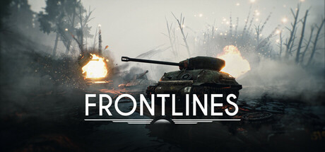

Making Front Lines

As it is often the case, I started out on this project with very little idea of what, how and with whom I wanted to make for this module. All I knew was the fact that we needed a team for a studio project which will be graded, the final product of which needs to be posted on Steam. This was made clear from the start and became a goal straight away. I ended up gravitating towards my good friends from the programming department, Matt and Matej. They were quite interested in the idea of a twin-stick isometric shooter, which did not sound bad to me either. We were then joined by designers Luca, Sam and Zach and artists Chris and Dan, and just like that we had our team. We were rather lucky in that regard because we could form a team, start having meetings and draft some initial requirements and designs before the semester started thanks to being part of Thunderblossom Studios. In the few weeks before the start of the module we did designs, UMLs and more meetings, which gave us a rough idea of what we wanted to see done in our game. The initial idea and prototype was a soldier moving around with a gun and shooting on mouse press. We still hadn’t decided on a theme for our game. After some team brainstorming we decided we would go for a tank game. Simple enough mechanics with some weapons and a few enemies, or so we thought…We started work on it rather excited, and as often happens, riding the high of starting something new.
I picked up the weapons systems initially, which was quite straight-forward to implement. Everything was going smoothly, with us realizing we had a lot more capacity and speed than work. It was in the third week of the semester I realized we could probably benefit from creating a CI/CD pipeline using Jenkins, since there didn’t seem to be a lot more to do for me at that stage. I took to it and after a painful but rewarding three weeks managed to get it to work. I also managed to tweak the system so that it uploads the build to google so anyone can download it from discord and play the latest build. I must say it greatly improved welfare in the group and totally eliminated the worry of having build days. In hindsight, it was a great addition to the project which I am very proud of. Right after that I focused on our main goal, getting the game on Steam. I learned everything there was to know about releasing on Steam ana managed to get an early build there, in preparation for the big release.
After this big personal milestone of creating the Jenkins pipeline and posting on Steam I took to doing various miscellaneous tasks within the game. Over the next few weeks I implemented things such as the mini-map, event system, countless weapon changes, tweaks, fixes and additions. It was also at this time that I realized that the excitement and motivation of some of my colleagues was waning. Some had started vanishing for days on end, not replying and neglecting their work or doing it poorly, which was slowly but surely impacting our scope and affecting everyone negatively. I must admit this was making me lose motivation as well, but I kept going by thinking about the ultimate goal of releasing on Steam and the countless benefits it would have for me and my portfolio.
Towards the end of the semester, in weeks 7-8, I came upon another harsh realization. It was that any self-respecting game had a saving system, and that our game format absolutely demanded one. I took to sorting through all of the systems, classes and bits of information to decide what data would go into the saving system. After two very painful and demanding weeks I managed to get it all to work and stay consistent when opening and closing the game. It was, again, a hard but rewarding task with great impact on gameplay and the quality of our product.
The last big milestones for the project were Alpha and Beta. In week 8 we started heavily testing our game, tracking, logging and fixing the number of bugs that had emerged over production. I was lucky to only have four major bugs, possibly due to the fact that a lot of my work was done outside the engine. The problem of not having enough work was upon me again, so I solved it by fixing more unclaimed bugs on the tracker. We then went into Beta, where we sent the game out to the people that had registered their interest and did the last few tweaks based on their feedback.
The last big challenge for me was Steam. It re-emerged in week 10, where I found myself needing to implement the Steam achievements. Quite a tricky task in some places, however I completed it within one week and was ready for release. We then submitted our product page for review, which got quickly approved, and then submitted the build, which, after being rejected once and undergoing a few minor tweaks was approved as well. I am writing this at the end of week 11, we have everything approved and are due for release on December 20th. There are only a few design tweaks that need to be done before our game can finally be released on Steam.
I must say I am extremely content to have been a part of this team and walk out of this module with such a solid portfolio piece that might even become a viable product on Steam. It seems unbelievable that we are doing this and have reached such great results with a team of only eight people. I have worked with some amazing and talented people and will definitely remember and take this experience with me on my career journey. I was lucky to be surrounded by great colleagues, teachers and producers. We did have our ups and downs, however we learned what teamwork truly is and I can confidently say that making this game has shown me what big passion I have for game development and tech in general.